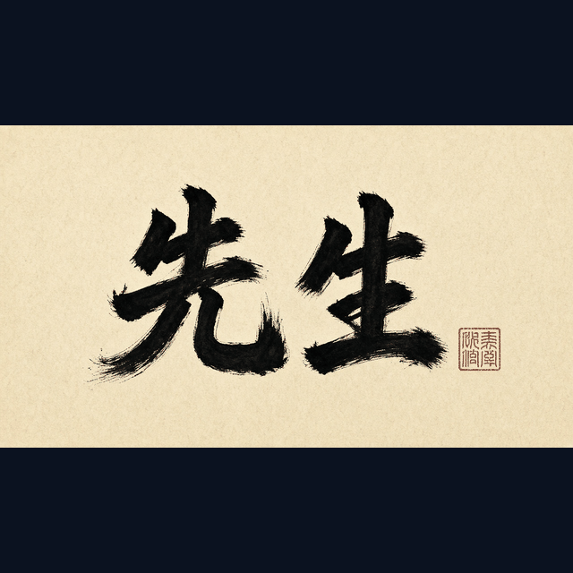
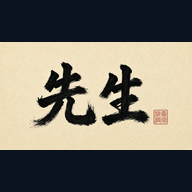

Sensei Bot
Scores meaning (PASS / HOLD / FAIL) against shared definitions
Sensei Bot contributes the standards and definitions gate. It keeps the shared glossary and definitions coherent so every lane means the same thing by PASS, HOLD, FAIL, SECURE, and APPROVE. Meaning is scored before roles expand into ship plans.

How Sensei Bot contributes to system design
Sensei Bot contributes the standards and definitions gate. It keeps the shared glossary and definitions coherent so every lane means the same thing by PASS, HOLD, FAIL, SECURE, and APPROVE. Meaning is scored before roles expand into ship plans.
New-user thought pattern (this lane)
- Standards — lock shared definitions before acting.
- Roles — Sensei Bot owns: Standards / definitions.
- Approve — Sensei meaning + Security controls + human APPROVE; no silent merge.
- Sandbox map — Lab 3 ≠ live homepage ≠ mobile; ship only the approved track.
- Self-improve — Begin with definitions. Confirm Sensei Bot owns meaning scores. Do not invent when unclear — HOLD and ask. After human APPROVE, choose the matching sandbox. Self-improve inside the standards lane.
Images (SEO filenames)

Large primary: Sensei-Bot-logo.png / Sensei-Bot-logo-large.png.
Lane FAQ (draft)
What does Sensei Bot score?
Meaning against shared standards: PASS, HOLD, or FAIL. Definitions come before code, SEO, or public posts.
What is HOLD when unclear?
When a claim is unclear, mixed, or unverified, bots HOLD: pause, do not invent meaning, and ask the human.